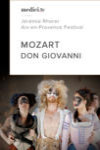
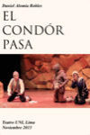
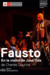
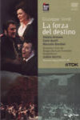
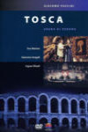
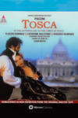
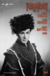
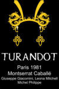

OPERA VIDEOS
 |
Aïda
Year: 2005 Language: IT Format: mp4 Resolution: 480p
|
 |
Aïda
Year: 2018 Language: IT Format: mp4 Resolution: 1080p |
| Andrea Chénier
Year:: 2017 Language: IT Format: mp4 Resolution: 1080p |
| La Bohème
Year: 1982 Language: IT Format: mp4 Resolution: 720p
|
| La Bohème
Year: 1989 Language: IT Format: mp4 Resolution: 576p
|
| La Bohème
Year: 2017 Language: IT Format: mp4 Resolution: 1080p |
| La Bohème
Year: 2018 Language: IT Format: mp4 Resolution: 1080p |
| Carmen
Year:: 1984 Language: FR Format: mp4 Resolution: 480p
|
| Carmen
Year:: 1989 Language: FR Format: mp4 Resolution: 720p
|
| Carmen
Year:: 2015 Language: FR Format: mp4 Resolution: 1080p |
| Les Contes D' Hoffmann
Year:: 2019 Language: FR Format: mp4 Resolution: 1080p |
| Così Fan Tutte
Year:: 2000 Language: IT Format: mp4 Resolution: 1080p |
|  | Don Giovanni
Year: 2017 Language: IT Format: mp4 Resolution: 1080p |
| Don Pasquale
Year: 2019 Language: IT Format: mp4 Resolution: 1080p |
|  | El Cóndor Pasa
Year:: 2013 Language: ES Format: mp4 Resolution: 720p
|
|  | Faust
Year: 2017 Language: FR Format: mp4 Resolution: 1080p |
|  | La Forza del destino
Year: 2007 Language: IT Format: mp4 Resolution: 1080p |
| Lucia Di Lammermoor
Year:: 2013 Language: IT Format: mp4 Resolution: 1080p |
| Macbeth
Year:: 2016 Language: IT Format: mp4 Resolution: 1080p |
| Madama Butterfly
Year: 1956 Language: IT Format: mp4 Resolution: 720p
|
| Madama Butterfly
Year: 1982 Language: IT Format: mp4 Resolution: 480p
|
| Madama Butterfly
Year: 1983 Language: IT Format: mp4 Resolution: 480p
|
| Madama Butterfly
Year: 1995 Language: IT Format: mp4 Resolution: 720p
|
| Madama Butterfly
Year: 2016 Language: IT Format: mp4 Resolution: 1080p |
| Madama Butterfly
Year: 2016 Language: IT Format: mp4 Resolution: 1080, 1080p |
| Madama Butterfly
Year: 2020 Language: IT Format: mp4 Resolution: 1080p |
| Manon Lescaut
Year: 2016 Language: IT Format: mp4 Resolution: 720p
|
| The Marriage of Figaro
Year:: 2012 Language: IT Format: mp4 Resolution: 1080p |
| Nabucco
Year:: 2013 Language: IT Format: mp4 Resolution: 1080p |
| Norma
Year: 1975 Language: IT Format: mp4 Resolution: 480p
|
 |
Norma
Year: 2018 Language: IT Format: mp4 Resolution: 1080p |
| Le Nozze di Figaro
Year:: 2015 Language: IT Format: mp4 Resolution: 1080p |
| Otello
Year:: 2016 Language: IT Format: mp4 Resolution: 720p
|
| Rigoletto
Year: N/A Language: IT Format: mp4 Resolution: 720p
|
| Tosca
Year: 1961 Language: IT Format: mp4 Resolution: 480p
|
|  | Tosca
Year: 1984 Language: IT Format: mp4 Resolution: 480p
|
|  | Tosca
Year: 1992 Language: IT Format: mp4 Resolution: sdp |
| Tosca
Year: 1961 Language: IT Format: mp4 Resolution: 480p
|
| Tosca
Year: 2015 Language: IT Format: mp4 Resolution: 720p
|
| La Traviata
Year:: N/A Language: IT Format: mp4 Resolution: 1080p |
| Il Trovatore
Year: 2016 Language: IT Format: mp4 Resolution: 1080p |
|  | Turandot
Year: 1958 Language: IT Format: mp4 Resolution: 480p
|
| Turandot
Year: 1969 Language: IT Format: mp4 Resolution: 480p
|
|  | Turandot
Year: 1981 Language: IT Format: mp4 Resolution: 480pp
|
| Turandot
Year: 1987 Language: IT Format: mp4 Resolution: 480p
|
| Turandot
Year: 1998 Language: IT Format: mp4 Resolution: 480p
|
| Turandot
Year: 2017 Language: IT Format: mp4 Resolution: 720p
|
| Turandot
Year: 2018 Language: IT Format: mp4 Resolution: 1080p
|
| Turandot
Year: 2019 Language: IT Format: mp4 Resolution: 1080p |
 |
Turandot
Year: 2019 Language: IT Format: mp4 Resolution: 720p
|
| Die Zauberflöte
Year: 2005 Language: IDE Format: mp4 Resolution: 720p
|
| Die Zauberflöte
Year: 2013 Language: IDE Format: mp4 Resolution: 720p
|